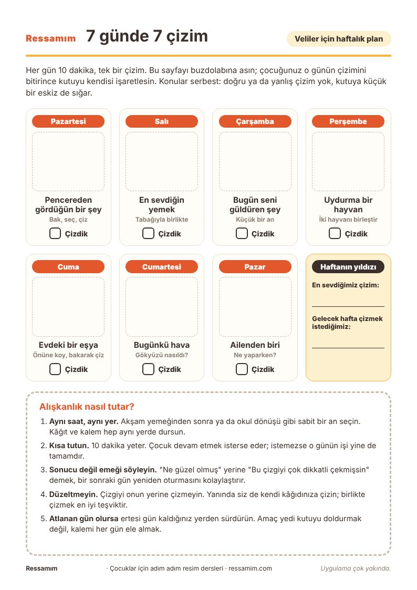

7 günde 7 çizim: veliler için haftalık çizim planı
Her gün 10 dakika, tek bir çizim. Bu tek sayfalık planı yazdırıp buzdolabına asın; çocuğunuz o günün çizimini bitirince kutuyu kendisi işaretlesin. Konular serbest: doğru ya da yanlış çizim yok.
Planı indir (PDF, tek sayfa A4)
İndirmek için kayıt ya da e-posta gerekmez.

Haftanın konuları
- Pazartesi: Pencereden gördüğün bir şey
- Salı: En sevdiğin yemek
- Çarşamba: Bugün seni güldüren şey
- Perşembe: Uydurma bir hayvan (iki hayvanı birleştir)
- Cuma: Evdeki bir eşya (önüne koy, bakarak çiz)
- Cumartesi: Bugünkü hava
- Pazar: Ailenden biri
Alışkanlık nasıl tutar?
- Aynı saat, aynı yer. Akşam yemeğinden sonra ya da okul dönüşü gibi sabit bir an seçin. Kâğıt ve kalem hep aynı yerde dursun.
- Kısa tutun. 10 dakika yeter. Çocuk devam etmek isterse eder; istemezse o günün işi yine de tamamdır.
- Sonucu değil emeği söyleyin. "Ne güzel olmuş" yerine "Bu çizgiyi çok dikkatli çekmişsin" demek, bir sonraki gün yeniden oturmasını kolaylaştırır.
- Düzeltmeyin. Çizgiyi onun yerine çizmeyin. Yanında siz de kendi kâğıdınıza çizin; birlikte çizmek en iyi teşviktir.
- Atlanan gün olursa ertesi gün kaldığınız yerden sürdürün. Amaç yedi kutuyu doldurmak değil, kalemi her gün ele almak.
Çizimini gösterdiğinde ne söyleyeceğinizi düşünüyorsanız: Çocuğunuzun çizimine ne demeli? Veliler için 12 cümle · Evde çizim köşesi nasıl kurulur?
Ressamım, 4–12 yaş arası çocuklar için adım adım resim dersleri sunan bir uygulamadır. Uygulama çok yakında. Ana sayfa · Gizlilik Politikası